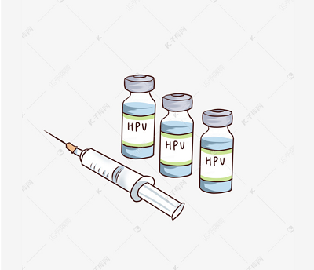

百度词条
疫苗是指用各类病原微生物制作的用于预防接种的生物制品。其中用细菌或螺旋体制作的疫苗亦称为菌苗。疫苗分为活疫苗和死疫苗两种。常用的活疫苗有卡介苗，脊髓灰质炎疫苗、麻疹疫苗、鼠疫菌苗等。常用的死疫苗有百日咳菌苗、伤寒菌苗、流脑菌苗、霍乱菌苗等。
不同疫苗的生产时间各不相同，有的疫苗可能需要22个月才能生产出一个批次。疫苗的开发是一个漫长而复杂的过程，且成本很高。接种疫苗是预防和控制传染病最经济、有效的公共卫生干预措施，对于家庭来说也是减少成员疾病发生、减少医疗费用的有效手段。
据估计，免疫接种每年能避免200万至300万例因白喉、破伤风、百日咳和麻疹导致的死亡。全球疫苗接种覆盖率（全球获得推荐疫苗的儿童所占的比例）在过去几年中一直保持稳定。
原理
疫苗是将病原微生物（如细菌、立克次氏体、病毒等）及其代谢产物，经过人工减毒、灭活或利用转基因等方法制成的用于预防传染病的自动免疫制剂。疫苗保留了病原菌刺激动物体免疫系统的特性。当动物体接触到这种不具伤害力的病原菌后，免疫系统便会产生一定的保护物质，如免疫激素、活性生理物质、特殊抗体等；当动物再次接触到这种病原菌时，动物体的免疫系统便会依循其原有的记忆，制造更多的保护物质来阻止病原菌的伤害。
种类
这一类的病毒疫苗多具有超过90%的效力，其保护作用通常延续多年。它的突出优势是病原体在宿主复制产生一个抗原刺激，抗原数量、性质和位置均与天然感染相似，所以免疫原性一般很强，甚至不需要加强免疫。这种突出的优势同时也存在潜在的危险性：在免疫力差的部分个体可引发感染；突变可能恢复毒力。后者随着病原毒力的分子基础的认识可更合理地进行减毒，可能使其减毒更为确实并不能恢复毒力。
与减毒活疫苗相比灭活疫苗采用的是非复制性抗原（死疫苗），因此，其安全性好，但免疫原性也变弱，往往必须加强免疫。需要注意的是，并不是所有病原体经灭活后均可以成为高效疫苗：其中一些疫苗是高效的，如索尔克注射用脊髓灰质炎疫苗（IPV）或甲肝疫苗；其它则是一些低效、短持续期的疫苗，如灭活后可注射的霍乱疫苗，几乎已被放弃；还有一些部分灭活疫苗的效力低，需要提高其保护率和免疫的持续期，如传统的灭活流感和伤寒疫苗。这些低效疫苗大多数将被新型疫苗代替。
当疾病的病理变化主要是由于强力外毒素或肠毒素引起时，类毒素疫苗具有很大的意义，如破伤风和白喉的疫苗。一般来说，肠毒素的类毒素很少成功。然而肠毒素型大肠杆菌的热稳定性肠毒素（LT）经遗传改造的去毒变构体，有希望成为有效的旅行者腹泻疫苗。霍乱毒素（CT）对应的突变可能成为更为重要的疫苗。这两种毒素的变异体甚至可以诱导很好的粘膜免疫，也是有希望的粘膜免疫佐剂。
DNA重组技术使得获取大量纯抗原分子成为可能。这与以病原体为原料制备的疫苗相比在技术上发生了革命性变化，使得质量更易控制，价格也更高。从效果来看，有些亚单位疫苗，如非细胞百日咳、HBsAg等，在低剂量就具有高免疫原性；而另外一些疫苗的免疫力则较低，要求比铝盐更强的佐剂。
载体疫苗将抗原基因通过无害的微生物这种载体进入体内诱导免疫应答。它的特点是组合了减毒活疫苗强有力的免疫原性和亚单位疫苗的准确度两个优势。这种活载体疫苗的一个显著好处是可以有效在体内诱导细胞免疫，这在目前诱导细胞免疫方法还不够好、细胞免疫在一些疾病又特别重要的背景下显得很有前景。在试验中使用的重要载体有牛痘病毒的变体、脊髓灰质炎病毒、禽痘病毒、腺病毒、疱疹病毒、沙门菌、志贺菌等。也可以同时构建一个或多个细胞因子基因，这样可增强免疫反应或者改变免疫反应方向。
核酸疫苗也称之为DNA疫苗或裸DNA疫苗。它与活疫苗的关键不同之处是编码抗原的DNA不会在人或动物体内复制。核酸疫苗应包含一个能在哺乳细胞高效表达的强启动子元件例如人巨细胞病毒的中早期启动子；同时也需含有一个合适的mRNA转录终止序列。肌内注射后，DNA进入胞浆，然后到达肌细胞核，但并不整合到基因组。作为基因枪方法的靶细胞，肌细胞和树突状细胞均没有高速的分裂增殖现象，他们与质粒也没有高度的同源，故同源重组可能性较小。
此类疫苗的载体是采用可食用的植物如马铃薯、香蕉、番茄的细胞，通过食用其果实或其它成分而启动保护性免疫反应。植物细胞作为天然生物胶囊可将抗原有效递送到粘膜下淋巴系统。这是目前为数不多的有效启动粘膜免疫的形式。因此，对于粘膜感染性疾病有很好的发展前景。
Our Team

Johne Doe
Creative
Jennifer
Programmer
Christean
CEO